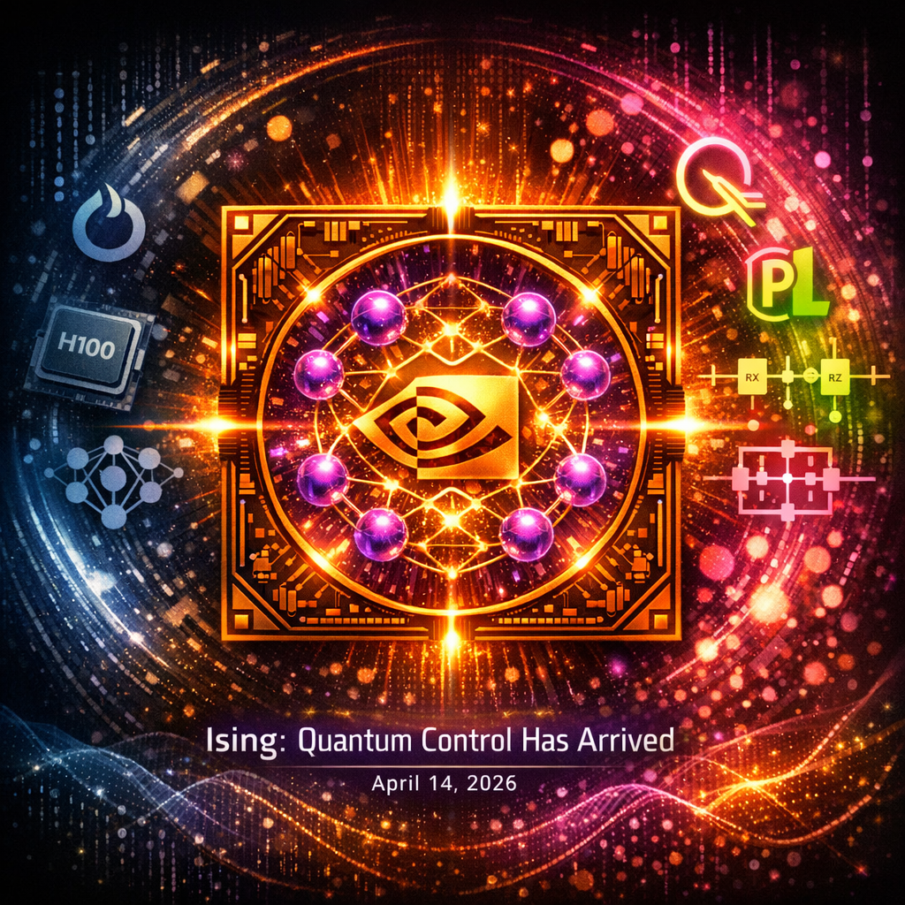

NVIDIA just made quantum computing accessible to anyone with a GPU. Here's why that means your current AI infrastructure has an expiration date, and what to do about it.
AI Quantum Computing isn't a research curiosity anymore. It's a production reality that arrived quietly on April 14, 2026, when NVIDIA open-sourced Ising: the first AI models purpose-built for quantum computing control. While the industry obsesses over token counts and context windows, the ground beneath classical AI infrastructure is shifting. The machines you're training models on today weren't designed for the quantum-hybrid workloads that will dominate by 2030.
This isn't hype. This is infrastructure physics meeting economic reality.
The Signal in the Noise: What NVIDIA Ising Actually Means
Let's cut through the press release speak. NVIDIA didn't just release another AI model. They released the CUDA moment for quantum computing, but in reverse.
Remember what CUDA did for GPUs? It turned specialized graphics hardware into general-purpose compute infrastructure that developers could actually use. NVIDIA Ising does something more profound: it turns specialized quantum hardware into something AI models can control, orchestrate, and optimize without requiring a PhD in quantum physics.
The Ising model is foundational to quantum annealing and optimization problems. By releasing open-source AI models trained to control these systems, NVIDIA effectively bridged the gap between classical neural networks and quantum circuits. Your PyTorch skills just became transferable to quantum hardware.
The uncomfortable truth: When the company that built the GPU empire starts preparing for quantum-classical convergence, infrastructure engineers should listen. They're not hedging. They're forecasting.
Why Your LLM Infrastructure Was Built for the Wrong Era
Current AI infrastructure has a fundamental design constraint: it assumes classical compute. Every decision you've made about GPU clusters, distributed training frameworks, and model serving architectures optimizes for a world where transistors and binary logic are the only game in town.
But quantum AI models operate on different physics entirely. Qubits aren't just faster bits; they're probabilistic, entangled, and require entirely different error correction, data encoding, and orchestration patterns. The quantum machine learning algorithms already being prototyped (variational quantum eigensolvers, quantum neural networks, QAOA circuits) can't run efficiently on classical infrastructure.
The problem in three parts:
- Data encoding bottleneck: Classical preprocessing pipelines weren't built for quantum feature maps.
- Hybrid orchestration gap: Current distributed training frameworks assume homogeneous compute.
- Error correction overhead: Quantum systems require AI-driven error correction that classical infrastructure can't provide.
Your A100 and H100 clusters? They're still relevant. But they're about to become the legacy mainframes of AI infrastructure, not the cutting edge.
Why Now? Four Forces Converging on Your Infrastructure
The quantum inflection point isn't theoretical. It's happening because four independent trends are colliding:
1. The Custom Silicon Endgame (The Meta/Broadcom Connection)
Meta just committed billions to custom AI chips with Broadcom to reduce NVIDIA dependence. SoftBank is building Physical AI for robotics by 2030. These aren't isolated moves. They're acknowledgments that general-purpose chips have hit limits.
The progression is clear: custom AI chips today, transitioning to specialized accelerators by 2028, and ultimately quantum control chips thereafter.
Quantum processors are the ultimate custom silicon. There is no general-purpose quantum chip because quantum physics doesn't work that way. NVIDIA's Ising release recognizes this reality: the future isn't just faster GPUs, it's hybrid classical-quantum systems where AI orchestrates both.
2. The Agent Infrastructure Layer (DARPA's Internet of Agents)
DARPA is standardizing how AI agents communicate with each other. But the hardest agent coordination problem isn't protocol design; it's orchestrating systems that decohere every microsecond.
Quantum control is multi-agent coordination at the physical limit: thousands of qubits, each requiring constant calibration, error correction, and pulse optimization. NVIDIA's Ising models are essentially a distributed agent system negotiating with nature's smallest agents.
The bridge: The same infrastructure patterns you're building for agent swarms today (distributed consensus, edge processing, heterogeneous compute) are the foundations of quantum-classical hybrid systems.
3. The Security Timeline Collapse (The Bank of England Warning)
While the Bank of England warns about Anthropic's AI cybersecurity risks, a bigger threat lurks: quantum computers will break RSA and ECC encryption that protects current AI systems. NIST's post-quantum cryptography standards mandate deprecation of quantum-vulnerable algorithms by 2035, but "harvest now, decrypt later" attacks are already happening.
What this means for AI infrastructure:
- Model weights encrypted with current standards will be extractable by quantum adversaries.
- Training data embedded in fine-tuned models becomes a liability, not an asset.
- API communications protected by TLS 1.2 and 1.3 will need quantum-safe upgrades.
The infrastructure you're building today needs to be crypto-agile: ready for algorithm replacement without architectural redesign.
4. The Sovereign AI and Inference Cost Collision
There is an inherent friction between this quantum shift and the broader movement toward Sovereign AI. The dream of completely air-gapped, local-first infrastructure relies on high-performance GPUs running on your own metal. But if the future of compute relies heavily on massive, centralized, super-cooled QPUs acting as accelerators, that local autonomy takes a massive hit. You cannot host a dilution refrigerator in a standard server rack.
Then there is the financial shock. Shifting from optimized local inference to a hybrid cloud-QPU model like AWS Braket or Azure Quantum will obliterate current compute budgets if managed poorly. Intelligent routing patterns will become the most critical component of your stack. You will need to use highly optimized local models for 90% of routine workflows, strictly routing only the complex, high-value optimization tasks to the QPU to avoid catastrophic API costs.
The Bridge: Quantum-Readiness Starts With Today's Decisions
You don't need a dilution refrigerator in your data center yet. But your current infrastructure decisions are either creating quantum debt or quantum optionality.
What's actually changing:
- Hybrid compute becomes default: AWS Braket, IBM Quantum, and Azure Quantum aren't replacements for classical infrastructure. They're extensions. Quantum processing units (QPUs) will function like specialized accelerators in heterogeneous compute graphs.
- Error correction becomes the bottleneck: Quantum error rates require AI-driven correction algorithms. The same attention mechanisms optimizing transformer inference will soon be correcting qubit decoherence in real-time.
- Optimization problems move to quantum: Drug discovery (Amazon's announcement), supply chain optimization, and financial modeling are already migrating to quantum annealers. NVIDIA Ising specifically targets these use cases.
The infrastructure implication: Your orchestration layer needs to speak both classical and quantum. Kubernetes for GPUs was version 1.0. Kubernetes for QPUs is version 2.0.
Future-Proofing Framework: A 3-Phase Preparation Checklist
Here's what developers and infrastructure engineers should do this quarter to prepare for quantum-classical convergence:
Phase 1: Assessment & Crypto-Agility (This Quarter)
| Action | Priority | Implementation |
|---|---|---|
| Audit cryptographic dependencies | High | Inventory OpenSSL, libsodium, crypto libraries |
| Implement crypto-agility patterns | High | Design systems for algorithm negotiation/rotation |
| Evaluate hybrid PQC for APIs | Medium | Test ML-KEM performance impact on latency |
| Document quantum risk exposure | Medium | Identify 2035+ confidential data in AI systems |
Specific code changes:
# Crypto-agile pattern (not quantum-safe yet, but ready)
from cryptography.hazmat.primitives import hashes
from cryptography.hazmat.primitives.asymmetric import padding
class QuantumReadyCrypto:
SUPPORTED_ALGORITHMS = ['rsa-2048', 'ml-kem-768'] # Add PQC later
def encrypt(self, data: bytes, algorithm: str = None):
# Implementation that can swap algorithms
passPhase 2: Hybrid Experimentation (Next 2 Quarters)
- Install quantum SDKs locally:
- Qiskit (IBM):
pip install qiskit - PennyLane (Xanadu):
pip install pennylane - Cirq (Google):
pip install cirq - NVIDIA cuQuantum:
pip install cuquantum-python
- Qiskit (IBM):
- Run hybrid circuit experiments:
from qiskit import QuantumCircuit from qiskit_machine_learning.neural_networks import EstimatorQNN # Hybrid classical-quantum layer prototype qc = QuantumCircuit(2) qc.h(0) qc.cx(0, 1) - Benchmark variational quantum algorithms: Test VQE and QAOA implementations on classical simulators with GPU acceleration.
Phase 3: Production Readiness (Within 12 Months)
- Deploy hybrid models on cloud QPUs: AWS Braket and IBM Quantum offer production access.
- Implement quantum-safe model serialization: Encrypt saved models with ML-KEM encapsulation.
- Monitor quantum SDK integration: Track Qiskit, PennyLane, and cuQuantum releases for breaking changes.
- Establish quantum threat modeling: Include quantum-enabled attacks in security reviews.
Woven Narratives: Connecting Today's Headlines

Meta and Broadcom: Meta's $10B+ custom silicon investment isn't just about escaping NVIDIA dependency. It's preparing for a future where quantum control chips are as essential as AI accelerators. The companies building custom chips today are positioning for quantum access tomorrow.
SoftBank Physical AI: By 2030, robots will require real-time quantum optimization for sensor fusion and control. NVIDIA Ising is the bridge between today's chat interfaces and tomorrow's physical AI endpoints.
DARPA Internet of Agents: Multi-agent coordination frameworks are training wheels for quantum orchestration. The Internet of Agents will eventually run on quantum-secured networks with entanglement-based consensus mechanisms.
Amazon Drug Discovery: Pharmaceutical molecular simulation is a natural quantum application. The next billion-dollar drug will be designed by AI controlling quantum computers via interfaces like NVIDIA Ising.
What This Means for Your Career (The Honest Assessment)
Classical ML engineering isn't dying. But the skillset that commands premium compensation is shifting:
- Decreasing value: Pure transformer architecture knowledge, prompt engineering tricks, vanilla MLOps.
- Increasing value: Hybrid classical-quantum architecture, quantum error correction, crypto-agile system design, heterogeneous compute orchestration.
The developers who start experimenting with quantum SDKs this quarter will define the infrastructure patterns that become standard by 2028. Everyone else will be migrating to frameworks they didn't create.
The Great AI Chip Unbundling Reaches Its Logical Conclusion
We've written about The Great AI Chip Unbundling before, highlighting how the era of general-purpose AI chips is ending as custom silicon becomes table stakes. NVIDIA Ising proves we understated the trend.
Quantum computing isn't just another type of custom chip. It's the point where chip specialization hits physical limits. You can't build a general-purpose quantum processor any more than you can build a general-purpose qubit.
The infrastructure engineers who recognize this trend aren't just future-proofing their careers. They're positioning for the next competitive moat: quantum-native AI capabilities that classical infrastructure simply can't replicate.
Call to Action: Take These 4 Steps This Quarter
- Install one quantum SDK this week (Qiskit or PennyLane) and run the "Hello World" quantum circuit.
- Audit your crypto dependencies and identify what needs crypto-agility refactoring by 2027.
- Prototype a hybrid classical-quantum layer using variational quantum algorithms.
- Subscribe to quantum ML research and start following arXiv quant-ph and quantum machine learning papers.
The quantum inflection point isn't coming. It arrived on April 14, 2026, when NVIDIA made quantum control models open source. Your move.
Get More Articles Like This
Quantum-classical convergence is just beginning. I'm tracking the infrastructure shifts that matter—from orbital compute to quantum AI—and translating them into actionable preparation checklists.
Subscribe to receive updates when we publish new content. No spam, just real analysis from the trenches.